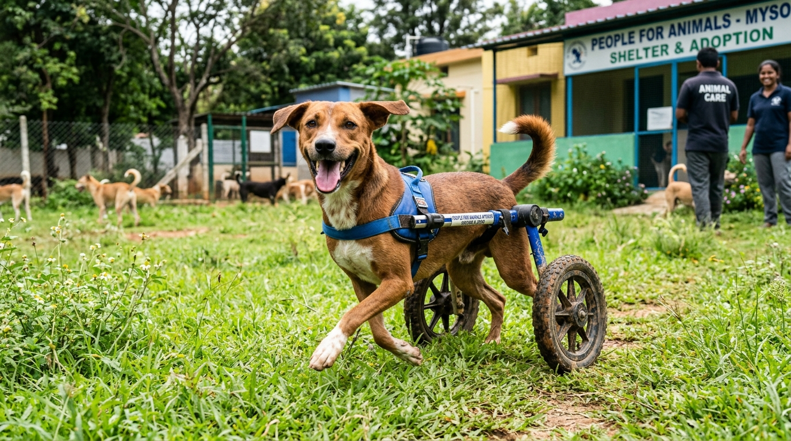

In the unforgiving environment of urban street survival, severe physical disability is almost universally a death sentence. A dog that has suffered complete spinal cord transection from a high-speed vehicle impact, an animal blinded by severe cataracts or trauma, a three-legged amputee, or an elderly geriatric dog whose joints are crippled by advanced osteoarthritis cannot outrun traffic, defend territory, or compete for food scraps.
In many conventional animal shelters across India, these "unadoptable" dogs are routinely slated for euthanasia due to lack of space and the intense labor required for their upkeep. At Dogs Protection Trust (DPT), we hold an uncompromising moral principle: disability is not a justification for death. A paralyzed or senior dog retains an immense capacity for joy, affection, curiosity, and love. In this comprehensive master guide, we invite you inside our permanent lifetime sanctuary, where over 50 special-needs and senior rescues live out their natural lives in comfort and dignity.
1. Palliative Paraplegia Management: Life on Two Wheels
Paraplegic canines—dogs whose hind legs are permanently paralyzed due to lumbar or thoracic spinal trauma—require specialized daily clinical routines to prevent secondary complications like pressure sores, urinary tract infections, and muscle atrophy.
The Daily Clinical Paraplegia Routine
- Manual Bladder Expression (Every 6 Hours): Paralyzed dogs lose neurogenic control of their detrusor bladder muscles. Our trained caregivers perform gentle, manual abdominal palpation four times daily to fully express the bladder, preventing urine retention, cystitis, and life-threatening ascending kidney failure.
- Hydro-Sanitary Cleansing & Barrier Creams: Hindquarters are washed with warm antiseptic water daily and dried thoroughly. Medical-grade zinc oxide and silicone barrier creams are applied to prevent urine scald on delicate skin folds.
- Custom Two-Wheeled Aluminum Carts: Every paralyzed resident is fitted with a custom-engineered, lightweight aluminum mobility wheelchair. Watching a paralyzed dog who hasn't stood in months strap into their wheels and sprint enthusiastically across our grass fields is one of the most emotional sights at our shelter!
- Orthopedic Anti-Decubitus Bedding: Kennels are outfitted with thick memory foam and washable medical fleece that evenly distribute body weight, completely preventing bedsores (decubitus ulcers) over bony hips and hocks.
2. Geriatric Palliative Care: Honoring Mysore's Senior Street Dogs
Street dogs age rapidly due to lifelong malnutrition, severe weather extremes, and relentless parasitic burdens. An 8-year-old street dog is physiologically equivalent to a 14-year-old house pet, suffering from degenerative disc disease, chronic renal insufficiency, and reduced vision.
| Geriatric Health Condition | DPT Palliative Management | Quality-of-Life Outcome |
|---|---|---|
| Advanced Osteoarthritis | Daily Glucosamine, Chondroitin, MSM, and cold-laser therapy | Restores pain-free morning mobility and easy standing |
| Chronic Kidney Disease (CKD) | Low-phosphorus diets, subcutaneous fluid therapy, aluminum hydroxide binders | Stabilizes blood urea nitrogen and prevents nausea |
| Complete Blindness / Cataracts | Fixed kennel layouts, sensory scent markers (lavender/vanilla paths), auditory guidance | Allows blind dogs to navigate comfortably without bumping into obstacles |
| Dental Disease / Missing Teeth | Pureed warm bone-broth stews, steamed minced poultry, soft egg mashes | Ensures 100% nutrient absorption without oral pain |
🾠Case Study: Kaali's 5 Years of Wheelchair Joy
The Incident: Kaali, a pitch-black Indie female, was hit by an SUV on KRS Road in 2019, severing her T12 vertebra. She was brought to DPT dragging her lifeless hind legs along the hot asphalt, with exposed flesh on her paws.
The Lifetime Haven: After healing her wounds, our team fitted Kaali with custom bright yellow wheels. For the past five years, Kaali has been our sanctuary's undisputed sprint champion! She greets every delivery truck at the gate and acts as a maternal foster mother to new orphan puppies.
The Promise: Kaali will never be abandoned or euthanized. Dogs Protection Trust is her forever home.
4. Canine Cognitive Dysfunction Syndrome (Doggie Dementia) in Seniors
Just like elderly humans, senior street dogs frequently develop Canine Cognitive Dysfunction Syndrome (CCDS), characterized by neurodegenerative amyloid plaque deposition and decreased cerebral blood perfusion. Symptoms include spatial disorientation (getting stuck behind doors), sleep-wake cycle reversals (nighttime pacing), and vocalization.
The DPT Senior Cognitive Protocol
- Medium-Chain Triglyceride (MCT) Nutrition: Supplementing daily diets with pure cold-pressed coconut oil, providing alternative ketone energy for aging neurons.
- Antioxidant & Neuroprotective Therapies: Daily administration of S-Adenosylmethionine (SAMe), Ginkgo Biloba, and Vitamin E to scavenge free radicals and support hepatic-neural metabolism.
- Structured Sensory Routine: Keeping daily feeding, outdoor sunbathing, and sleeping hours completely identical 365 days a year, minimizing cognitive confusion and night-time anxiety.
5. Custom Hydrotherapy & Heated Water Rehabilitation
For paralyzed dogs and seniors with severe hip osteoarthritis, gravity is the enemy. Buoyancy in our heated therapeutic hydrotherapy pool removes 90% of body weight, allowing dogs with weakened limb muscles to exercise without joint impact:
- Cardiovascular Maintenance: Swimming with life jackets maintains heart and lung capacity without placing strain on healing spinal discs.
- Circulatory Stimulation: Warm water (32°C - 34°C) dilates peripheral blood vessels, promoting oxygen delivery to atrophied hindquarter muscles.
6. Tripod Canines: Post-Amputation Biomechanics & Long-Term Joint Preservation
When severe road trauma results in unsalvageable limb necrosis, brachial plexus avulsion, or compound shattered joints, surgical limb amputation is often the kindest, life-saving intervention. Dogs adapt to three-legged life (becoming "Tripods") with astonishing speed, but long-term biomechanical adjustments are essential:
- Forelimb vs. Hindlimb Amputations: Dogs carry 60% of their total body weight on their front limbs. Forelimb amputees require strict weight management to prevent accelerated degenerative arthritis in the remaining single front shoulder and carpal joints.
- Nonslip Flooring Protocols: All sanctuary ramps and kennel runs for tripods are outfitted with high-traction rubber matting, completely preventing painful slips and muscle strains.
- Joint Chondroprotective Injections: Monthly subcutaneous injections of Adequan (polysulfated glycosaminoglycan) to stimulate cartilage repair and maintain synovial fluid viscosity.
7. Sensory Architecture for Deaf & Blind Sanctuary Residents
Navigating physical sanctuary spaces without sight or hearing requires intentional architectural design. At Dogs Protection Trust, our special-needs living enclosures utilize multi-sensory environmental cues:
- Tactile Flooring Transitions: Switching from smooth non-porous tile inside resting bays to textured rubber mats near water stations and natural grass in play yards allows blind dogs to map their position through their paw pads.
- Essential Oil Olfactory Wayfinding: Gentle, dog-safe scent markers (dilute chamomile near sleeping corners, sweet orange near feeding spots) provide distinct aromatic signposts.
- Vibrational Communication for Deaf Dogs: Caregivers use rhythmic floor taps and flashlight hand-signals to signal meal times and outdoor play without startling deaf rescues.
8. The Financial Reality of Lifetime Sanctuary Care
Providing lifetime palliative care is our most resource-intensive commitment. A special-needs dog requires specialized food, joint supplements, diapers, wheelchair wheel replacements, and constant veterinary monitoring costing approximately ₹3,500 per month.
Because these dogs are rarely adopted, we rely entirely on compassionate individual sponsors who "virtually adopt" a senior or paralyzed dog, funding their monthly medical and nutrition needs.
9. How You Can Sponsor a Special-Needs Dog Today
- Sponsor a Wheelchair Cart (₹4,500): Directly funds the fabrication of a custom aluminum mobility cart for a newly paralyzed rescue dog.
- Monthly Virtual Adoption (₹3,500/month): Fully covers food, joint supplements, and medical care for a senior or paralyzed resident.
- Donate Orthopedic Bedding & Medical Supplies: We constantly welcome shipments of adult diapers (size L/XL), Betadine ointment, cotton rolls, and joint supplements from our Amazon Wishlist.
Written by Ashwini, Shelter Founder
Dedicated to providing lifelong sanctuary, mobility assistance, and unconditional love for disabled and senior dogs at Dogs Protection Trust Mysore.
6. Custom Canine Mobility Cart Engineering & Tailored Physical Therapy
At Dogs Protection Trust Mysore, paralyzed dogs do not sit forgotten in corners; they race across our sanctuary lawns with immense speed and infectious joy. Each wheelchair cart is custom-welded and calibrated in our sanctuary workshop using lightweight aviation-grade aluminum tubing, precision ball bearings, all-terrain puncture-proof tires, and ergonomic neoprene saddle supports that cradle the pelvis without chafing sensitive inguinal skin.
Our dedicated veterinary rehabilitation assistants perform daily physical therapy routines including passive range of motion (PROM) stretches, hot paraffin wax therapy for stiff joints, and warm hydrotherapy swimming sessions in our shallow sanctuary pool. These targeted aquatic exercises maintain spinal alignment, prevent muscle atrophy in paralyzed hindquarters, and stimulate deep proprioceptive nerve pathways that occasionally trigger unexpected neurological recoveries.
7. Palliative Pain Management & Joyful Senior Enrichment
Caring for Geriatric Street Dogs in Their Golden Years
Senior street dogs that have spent a lifetime dodging cars, enduring monsoon rains, and scavenging for crusts deserve dignity and comfort in their final years. Our senior sanctuary ward provides:
- Multi-Modal Arthritis Protocols: Daily Glucosamine, Chondroitin, MSM, and Omega-3 fish oil supplementation paired with veterinary-prescribed NSAIDs to eliminate joint stiffness and spinal pain.
- Heated Orthopedic Mattresses: High-density memory foam beds equipped with gentle thermal pads to protect frail bones during Mysore's cold winter nights.
- Sensory Sunbathing Gardens: Safe, walled garden enclosures where blind and deaf senior dogs can safely explore aromatic herbs, enjoy morning sunshine, and receive endless gentle affection until their natural, peaceful passing.
10. Complete Donation Transparency & Community Impact in Mysore
At Dogs Protection Trust, every single rupee received from compassionate animal lovers is directed straight into animal feed, sterile surgical equipment, life-saving medicines, and shelter utilities. We maintain transparent financial books, publish regular video and photo updates of our patients, and welcome community members to visit our sanctuary in Mysore to see their generous support in action. You can donate directly via UPI to 9108021554@sbi or support our ongoing veterinary and nutrition funds to help us rescue, heal, and protect hundreds more street canines every year.